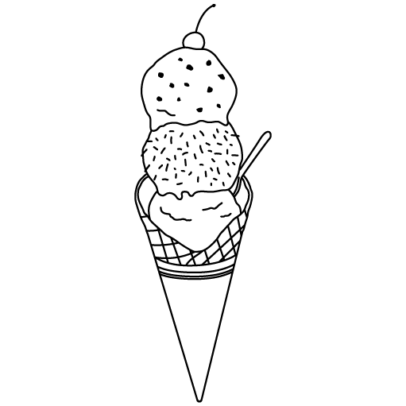

Profile
1996年生まれ。千葉県出身。
趣味｜読書、ファッション、料理、カフェ巡り
Webデザインに興味を持ったのは、”副業でブログをしよう！”と考えたときでした。
その時たまたま、Amazon kindleストアにHTMLの教本がセールで売られていたので即購入。(2022/8/26)
はじめてみると、これが楽しく。いつしか副業ではなく本業でやってみたいと考えるほどになりました。
仕事の合間や、帰宅後の時間を使い。毎日２~３時間学習。
正直、途中で何度も挫折しかけました。
自分の想像と、実際に反映されるものが一致しないことばかり。ネットや動画・書籍をあさり、一つずつクリアして行く日々。
それでも続けられたのは、職場の先輩や家族の応援。なにより、WEB作りが楽しいと思える心でした。
話がそれましたが。これが、私がWEBデザインに興味を持ったきっかけです。
今後も多くの技術を身に着けて、誰かの悩みを解決することに尽力して参ります。
-
1st. joined the company
３１アイスクリーム
入社半年で店長に就任。
店舗マネジメントに従事しました
-
2nd. joined the company

新宿の喫茶店
京王線改札前にあるカフェで、
自家焙煎珈琲の提供をしておりました。
-
3rd. assigned to company
日産自動車
機械系のプログラマーをしております
現在はペーパーレスの案件に参加。
New
- 2022.10.27｜Githubに過去作を掲示サイトへGo
- 2022.09.28｜サイト更新
- 2022.09.27｜サイト更新
- 2022.09.26｜サイト作成
Skill
HTML、CSS(scss)、Photoshop、illustrator、AdobeXD(Figma)など使用可能。
今後は、レスポンシブ対応やjqery、WordPressなどを集中的に学習していきます。

Contact
所在地
TEL:0120-000-000
〒231-0001 神奈川県〇〇市〇〇町